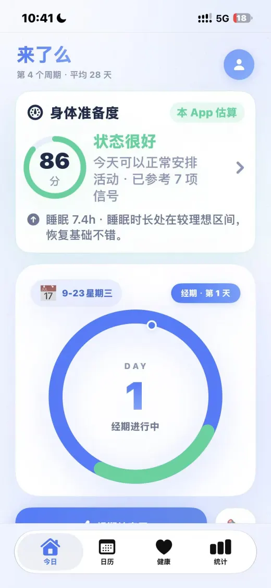
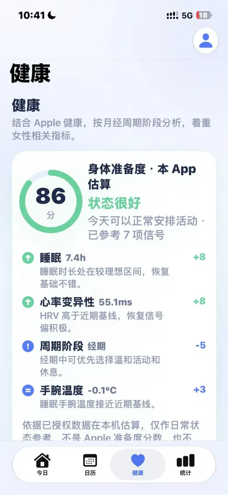

真实产品画面
身体准备度新版截图


目前可用
把周期与日常记录放在一起
当前商店版本支持经期预测、排卵记录、每日症状、周期异常提醒和可选的 Apple 健康连接。
周期与症状
记录经量、心情、症状和体温，并查看预测日期；预测只用于日常参考。
备孕与怀孕模式
查看排卵窗口、孕周和预产期等辅助信息，不应把预测结果作为医疗结论。
数据与权限
商店说明称记录保存在本机；Apple 健康访问可按需授权，也可关闭。
新版预览
身体准备度怎样得出估算
在用户授权且有对应数据时，新版会参考睡眠、心率变异性、静息心率、手腕温度、血氧、活动负荷和周期阶段，生成 0–100 的本 App 估算分数。没有的数据不会被当作已测得的数据。
分数有依据
截图展示了睡眠、HRV、周期阶段和手腕温度等因素对当天分数的影响。
不是 Apple 官方分数
估算在本机利用已授权的健康数据生成，不是 Apple 准备度分数。
不替代医疗判断
仅供日常状态参考，不能据此诊断疾病，也不能单独决定是否适合运动。
常见问题
下载前先确认
现在下载就能用身体准备度吗？
截至 2026 年 9 月 23 日，公开版为 2.0.3，尚未包含身体准备度。这里的截图是新版预览，请以 App Store 更新说明为准。
身体准备度是 Apple 官方或医疗分数吗？
不是。它是来了么在本机依据已授权数据和周期信息计算的日常估算，不提供医疗诊断。